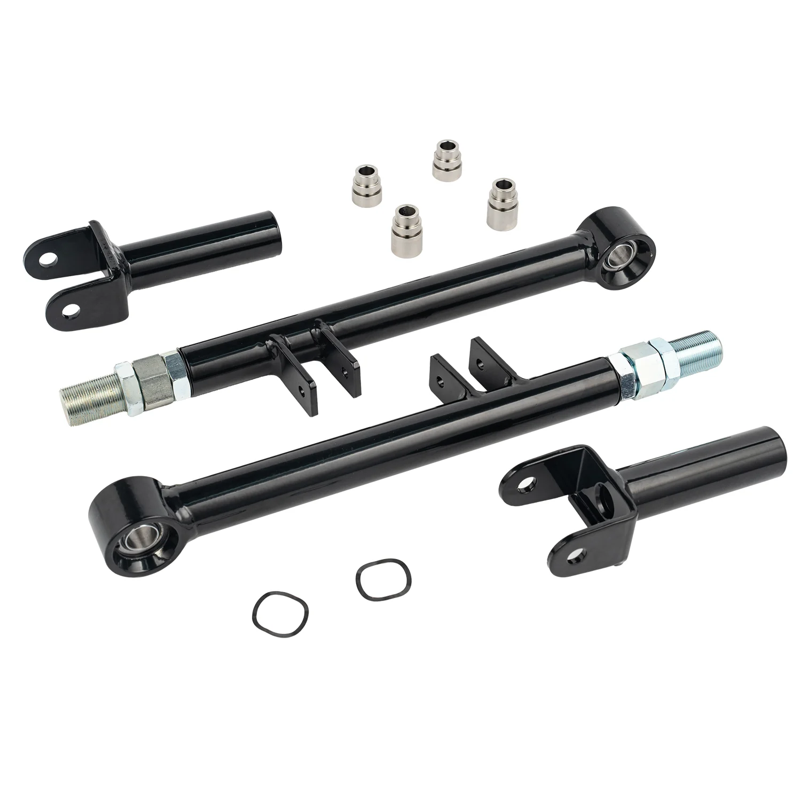

1 / 7FAPO Set of Adjustable Rear Toe Arm with bucket delet Do BMW E36 (true system) PZ026010
Zastosowanie: Do BMW serii 3 Coupe / Sedan / Cabrio (E36) 1990-2000 Regulowane tylne wahacze z usuwaniem łyżki (z wyłączeniem M3) Cechy produktu: Wykonane ze stopu stali o wysokiej wytrzymałości Kuty przegub kulowy z precyzyjną obróbką CNC Proces malowania proszkowego z długotrwałą ochroną przed rdzą Tuleja łożyska kulkowego z konstrukcją odporną na kurz Umożliwia regulację korekcji palców; +/-2 stopnie Zaprojektowa…
Application: For BMW 3-Series Coupe /Sedan/Convertible (E36) 1990-2000 Adjustable Rear Toe Arms With Bucket Delete (excludes M3) Features: Constructed of High-Strength Steel Alloy Forged ball joint with CNC precision machining Powdercoating Process with long time Rust protection Ball bearing bushing with Dust proof design Allows Toe Correction Adjustment; +/-2 Degrees Engineered To Be Direct Replacement OE Part For Easy Installation No Installation Instructions, Installation By Experienced Professionals Recommended Kit Includes: Set of rear toe arms All bolts and nuts included for installation
846 PLN
Opis produktu
Zastosowanie:
Do BMW serii 3 Coupe / Sedan / Cabrio (E36) 1990-2000 Regulowane tylne wahacze z usuwaniem łyżki (z wyłączeniem M3)
Cechy produktu:
- Wykonane ze stopu stali o wysokiej wytrzymałości
- Kuty przegub kulowy z precyzyjną obróbką CNC
- Proces malowania proszkowego z długotrwałą ochroną przed rdzą
- Tuleja łożyska kulkowego z konstrukcją odporną na kurz
- Umożliwia regulację korekcji palców; +/-2 stopnie
- Zaprojektowana jako bezpośrednia część zamienna OE dla łatwej instalacji
- Brak instrukcji instalacji. Zalecana instalacja przez doświadczonych specjalistów
Zestaw zawiera:
- Zestaw tylnych ramion
- W zestawie wszystkie śruby i nakrętki potrzebne do montażu
Application:
For BMW 3-Series Coupe /Sedan/Convertible (E36) 1990-2000 Adjustable Rear Toe Arms With Bucket Delete (excludes M3)
Features:
- Constructed of High-Strength Steel Alloy
- Forged ball joint with CNC precision machining
- Powdercoating Process with long time Rust protection
- Ball bearing bushing with Dust proof design
- Allows Toe Correction Adjustment; +/-2 Degrees
- Engineered To Be Direct Replacement OE Part For Easy Installation
- No Installation Instructions, Installation By Experienced Professionals Recommended
Kit Includes:
- Set of rear toe arms
- All bolts and nuts included for installation
FAPO Polska
Ten produkt obsługujemy lokalnie
Autoryzowana obsługa
FAPO Polska prowadzi katalog, kontakt i zamówienia bez odsyłania klienta do zewnętrznych sklepów.
Dobór po aucie
Sprawdzamy dopasowanie produktu do pojazdu, rocznika i wersji przed finalizacją zamówienia.
Wsparcie po zakupie
Masz kontakt w Polsce w sprawach zamówień, wysyłki, gwarancji i zwrotów.